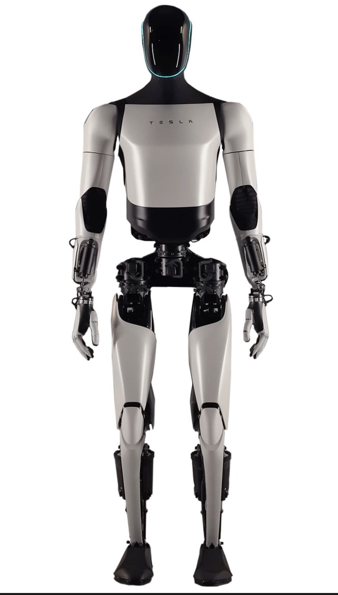

A hybrid MCTS-DRL pathfinding algorithm designed for safe, predictive human-robot interaction and tracking.
Enabling robots to follow human targets from ahead while maintaining safe distances and avoiding obstacles in dynamic environments.
Anticipating human movements and navigating around obstacles through stochastic sampling to forecast optimal strategies based on expected future rewards.
Combining MCTS with Deep Reinforcement Learning to generate reliable navigational goals while tracking human targets in uncertain environments.
Making high-level decisions and efficiently exploring decision spaces by focusing on promising paths while avoiding collisions and occlusions.
Beginning at the root node, the algorithm traverses the tree using the Upper Confidence Bound (UCT) formula. This guides the search toward promising branches, balancing exploration of new paths with exploitation of known high-reward routes.
New child nodes are added to represent potential future states and unexplored actions. This expands the search tree by simulating possible outcomes from the current decision point.
Each node undergoes a play-out or rollout to estimate future rewards. Models like SL-MCTS utilize neural networks to improve predictions and guide simulations toward more realistic outcomes.
Rewards from simulations update node statistics along the selected path. This enhances future path choices by favoring high-reward routes and continuously improving the decision tree.
This formula balances exploration and exploitation—the first term favors nodes with high rewards (exploitation), while the second term encourages visiting less-explored nodes (exploration).
Tesla's humanoid robot leverages MCTS for decision-making in dynamic, multitask settings. MCTS helps Optimus simulate grip forms, prioritize safety, and adapt paths with real-time feedback while handling tasks alongside humans.

Multiple agents navigating grids without colliding—commonly seen in robotics and automated warehouses where coordination is critical.
In rehabilitation exoskeletons, MCTS adjusts support according to patient feedback in real-time, optimizing gait assistance and personalizing therapy.
Guaranteeing robots travel efficiently in changing, unknown environments while dynamically bypassing barriers and obstacles.
Integrating robots into dynamic interactions with humans and other agents, increasing safety and boosting task completion rates.
| Methodology | Trajectory Accuracy | Obstacle Avoidance | Occlusion Handling | Mean Reward |
|---|---|---|---|---|
| DRL Only | Moderate | Limited | Poor | -18.4 |
| MCTS Only | Inconsistent | Moderate | Moderate | 3.2 ± 5.9 |
| MCTS-DRL Hybrid | Excellent | High | High | 5.4 |
Monte Carlo Tree Search (MCTS) is a heuristic search algorithm renowned for resolving complex decision-making problems through iterative randomized exploration, prominently utilized in game-playing AI and sequential decision-making tasks.
In this paper, we delve into the fundamental structure of MCTS and its applications in robotics and wearable exoskeletons, focusing particularly on robotic follow-ahead scenarios that require obstacle and occlusion avoidance. By integrating MCTS with Deep Reinforcement Learning (DRL), we propose a novel methodology enabling robots to make high-level decisions and generate reliable navigational goals while tracking a human target in uncertain environments.
We analyze the balance between exploration and exploitation within MCTS, its predictive capabilities, and how these features amplify adaptive decision-making and support efficient pathfinding. Case studies and implementation examples, including Tesla's Optimus robot, are presented to illustrate MCTS's effectiveness in real-world applications.
Index Terms: MCTS-DRL, Exoskeleton, Tesla Optimus Robot, SL-MCTS, MCTS
Human-robot interaction is a rapidly advancing field with applications ranging from autonomous vehicles to assistive robotics. A particularly challenging task within this domain is enabling a robot to follow a human target from ahead, maintaining a safe distance while avoiding obstacles and occlusions.
Traditional methods often struggle with the complexities of predicting human intentions and navigating dynamic environments characterized by uncertainty. Monte Carlo Tree Search (MCTS) is a highly regarded algorithm known for its effectiveness in decision-making under uncertainty.
Initially applied in artificial intelligence for playing board games, MCTS has evolved into a versatile tool extensively utilized in robotics and the optimization of multi-agent systems. Its mechanism relies on stochastic sampling to forecast optimal strategies based on expected future rewards.
The MCTS process comprises four fundamental stages: Selection, Expansion, Simulation, and Backpropagation, each contributing to the growth and adaptability of the search tree over time.
In this paper, we explore how integrating MCTS with Deep Reinforcement Learning (DRL) offers a promising solution to the challenges of robotic follow-ahead applications.
In robotic follow-ahead applications, a robot must navigate in front of a human, maintaining a consistent distance and orientation. This task is complex due to:
DRL provides a trained policy that estimates the expected rewards for actions, aiding MCTS in evaluating nodes during tree expansion. This integration improves the consistency and reliability of the navigational goals generated.
We compared the MCTS-DRL method against standard MCTS and DRL algorithms in a simulated environment with circular and S-shaped human movement patterns.
| Human Trajectory | DRL | MCTS | MCTS-DRL |
|---|---|---|---|
| Circle | −17.95 | 2.87 ± 5.96 | 4.53 |
| S-shaped | −21.84 | −3.83 ± 4.33 | −1.61 |
Robot maintained position in front; adjusted path with obstacles to avoid occlusion.
Robot adjusted path at ~12s to avoid occlusion rather than navigating around obstacle.
Robot altered course at ~17s to avoid occlusion while maintaining follow-ahead behavior.
Robot adjusted trajectory at corner, turning right to avoid collisions.
| Metric | Traditional MCTS | SL-MCTS |
|---|---|---|
| Success Rate | 78% | 92% |
| Average Path Length | 15 steps | 12 steps |
| Computation Time | 2.4s | 1.3s |
This study presents a groundbreaking approach for robotic follow-ahead applications, focusing on avoiding collisions and occlusions caused by obstacles in the environment.
Complete research paper including methodology, experimental results, performance comparisons, and future directions for MCTS-DRL in robotic navigation.
Incorporating advanced models like transformers to improve trajectory prediction accuracy and anticipate human behavior more effectively.
Expanding the system for multi-agent environments, enabling collaborative navigation and coordinated decision-making among multiple robots.
Enhancing the algorithm's energy efficiency by optimizing computational resource allocation for deployment on edge devices.
Applying the hybrid framework to other domains including autonomous vehicles, drones, and industrial automation systems.